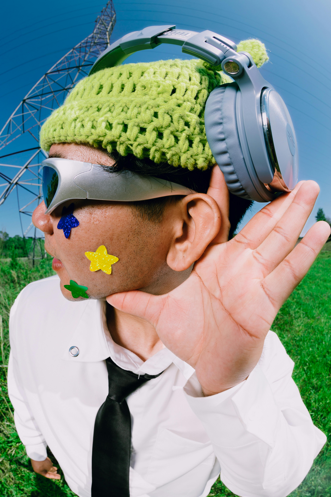
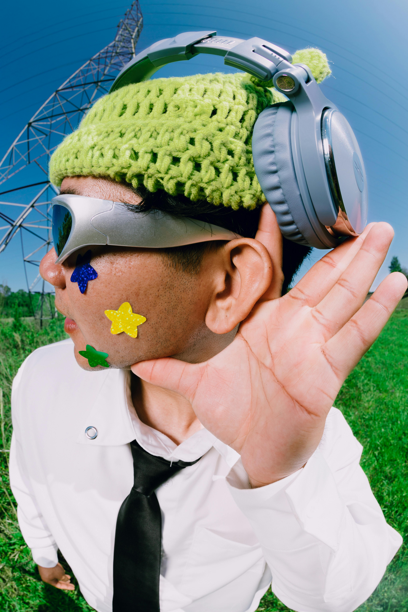
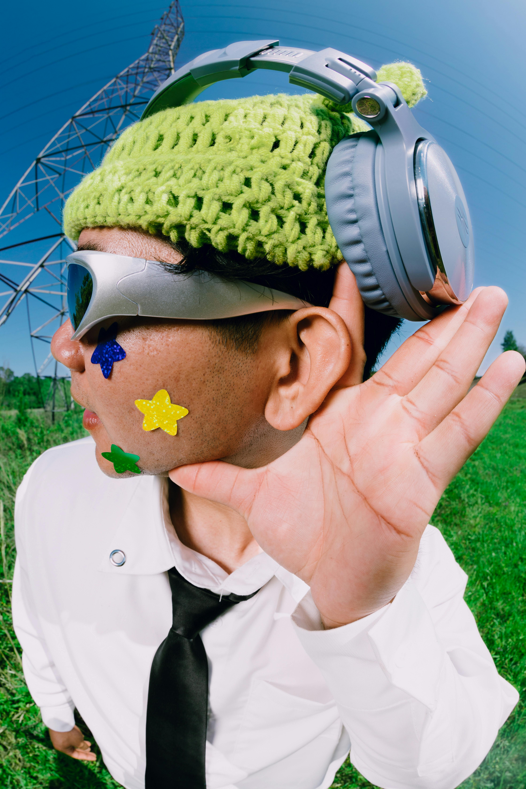

Explore Moods


 

Select a mood and let us create an experience for you.
Select your mood from the options provided above.
Receive personalized music and content based on your selection.
Immerse yourself in the curated experience tailored to you.

Let’s find your perfect mood!
Start Now